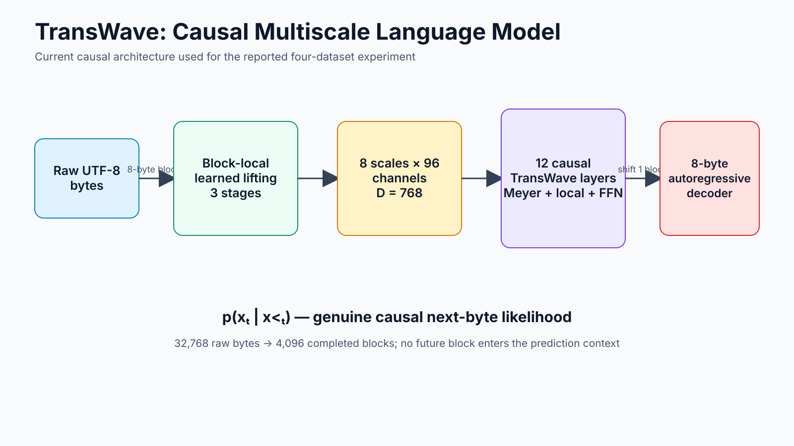
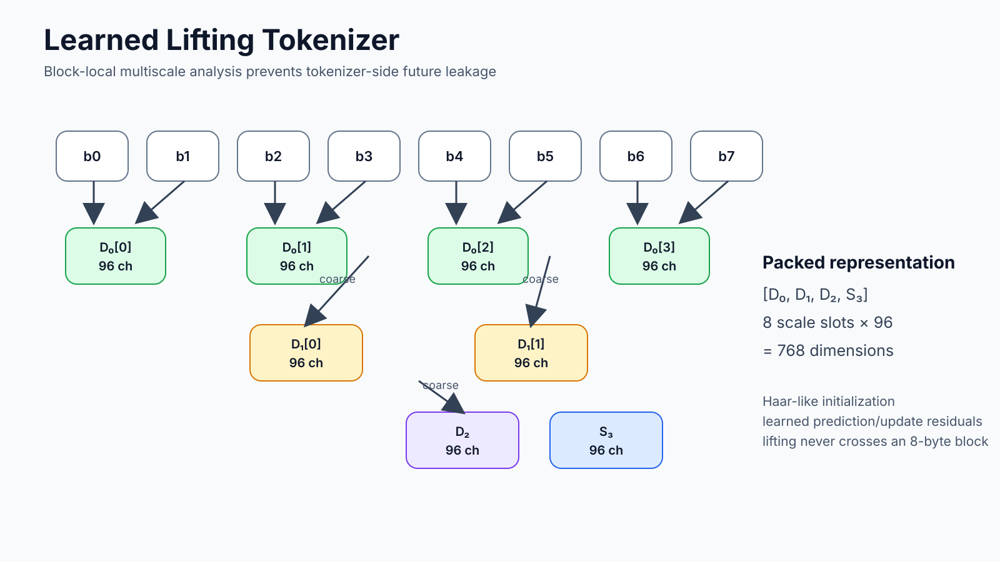
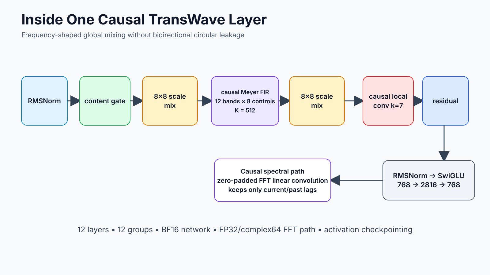
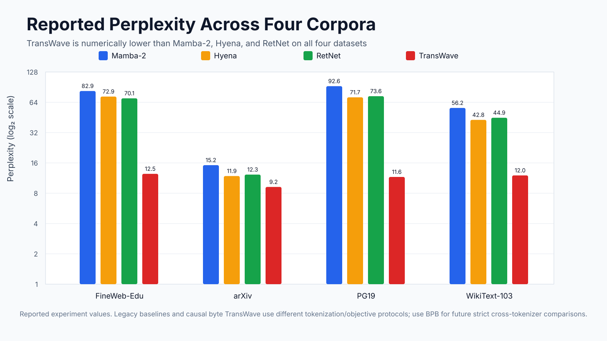
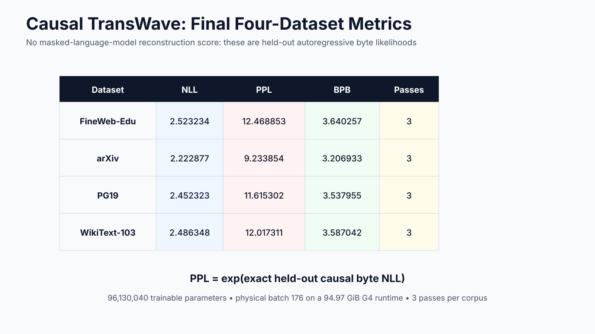
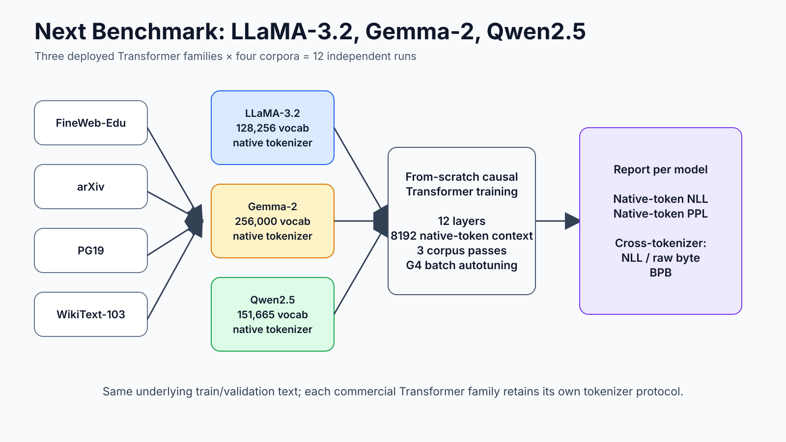

TransWave
Causal language modeling through learned lifting and Meyer-shaped multiscale sequence mixing.
Architecture

TransWave operates directly on raw UTF-8 bytes. Its learned lifting transform is restricted to completed eight-byte blocks; the global mixer is implemented as a causal one-sided FIR; an intra-block autoregressive decoder produces genuine next-byte likelihoods.


Current results
| Dataset | NLL | PPL | BPB |
|---|---|---|---|
| FineWeb-Edu | 2.523234 | 12.468853 | 3.640257 |
| arXiv | 2.222877 | 9.233854 | 3.206933 |
| PG19 | 2.452323 | 11.615302 | 3.537955 |
| WikiText-103 | 2.486348 | 12.017311 | 3.587042 |


Next benchmark

LLaMA-3.2, Gemma-2 and Qwen2.5 are tokenized according to their own native protocols and trained from scratch on FineWeb-Edu, arXiv, PG19 and WikiText-103. Native-token NLL/PPL is reported within each family; BPB provides the cross-tokenizer comparison.
Reproducibility
The repository includes the latest experiment notebook, the exact current causal cell extracted as Python, native-tokenization code, result tables and the Medium article draft.